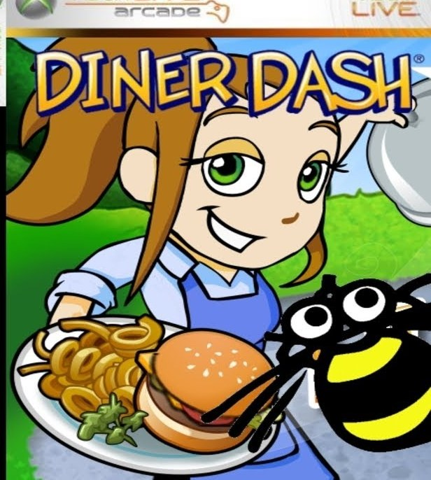

GOODGAMES SURVIVE / GAMES / Diner Dash

Diner Dash
the 2003 root of the Dash universe. Flo quit her job; the customers never did.
GALLERY

ABOUT DINER DASH
Diner Dash (December 2003) is the game that defined casual time management for a decade. Flo, a stockbroker burned out on the rat race, quits and rebuilds a rundown diner - and the player runs it: seat customers, take orders, deliver food, drop the check, clear dishes, and keep the chain flowing as the room fills. Every action is a click, and every click competes with every other click for the same two hands.
Its customer archetypes became genre vocabulary - the patient Bookworm, the Cellphone Addict who chats through their seat, the Family that sprawls, the Food Critic who can sink a reputation - each with patience curves that force sequencing decisions instead of pure speed. Chain bonuses reward the very thing the game makes hardest: planning two tables ahead while the current one burns.
The franchise it spawned ran through sequels, spin-offs, a SpongeBob crossover and mobile revivals, and the trademark ended up with Glu Mobile after PlayFirst folded. The original PC build was delisted everywhere, its unlock servers long dead - which places it exactly in this site's rescue lane: un-buyable, un-activatable, and preserved anyway.
FACTS
| released | 3 December 2003 |
| developer | gameLab |
| publisher | PlayFirst |
| platform | windows |
| players | single-player |
| characters | Flo |
| series | Diner Dash |
| content walls | none |
| size | 9 MB (hosted original) |
| still sold | no - delisted or un-buyable |
| test status | not-tested |
| target | windows 10 - haswell HD xxxx iGPU bar |
REQUIREMENTS - VS THE TARGET
2003 2D, single-digit-megabytes install. runs on anything, including hardware far below the target bar.
the target bar: haswell-class CPU with HD xxxx iGPU, windows 10. testing is a separate truth - see the status box.
SERIES - DINER DASH
Diner Dash · 2003 - this pageDiner Dash 2: Restaurant Rescue · 2006Diner Dash: Flo on the Go · 2006Diner Dash: Hometown Hero · 2007Diner Dash: Flo Through Time · 2008Diner Dash 5: Boom! · 2010Diner Dash (2015) · 2014Diner DASH Adventures · 2019SpongeBob Diner Dash · 2006SpongeBob Diner Dash 2: Two Times the Trouble · 2007
DOWNLOADS
this is the un-buyable case: no key server, no store, no publisher counter to steal from. the archive route is the only route.